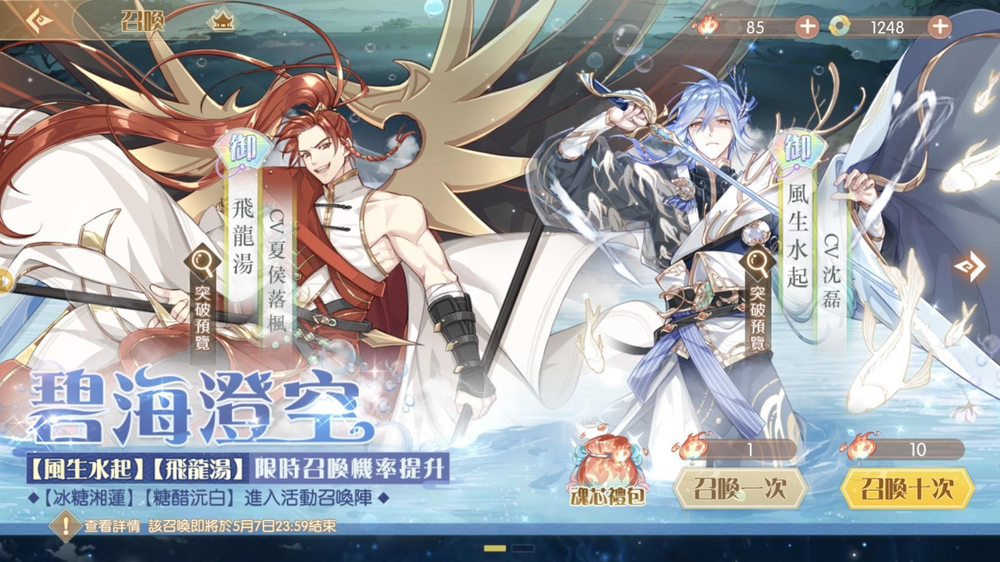
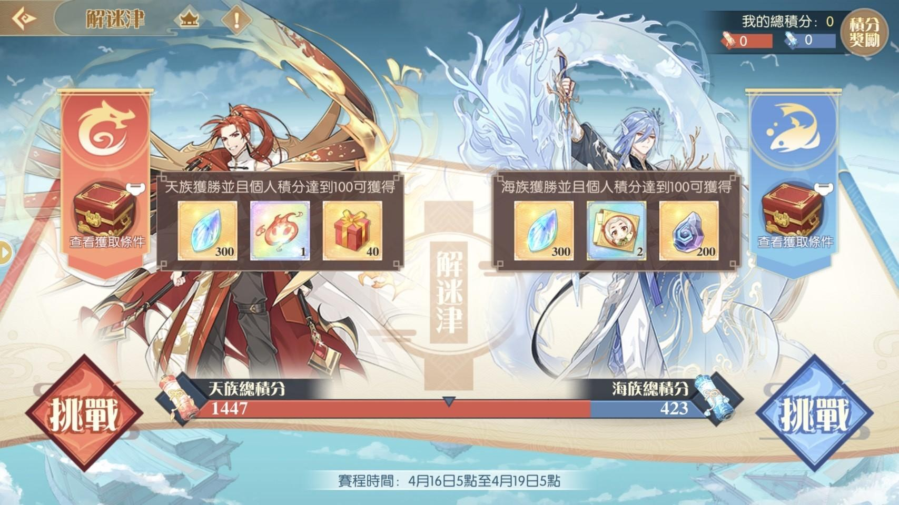
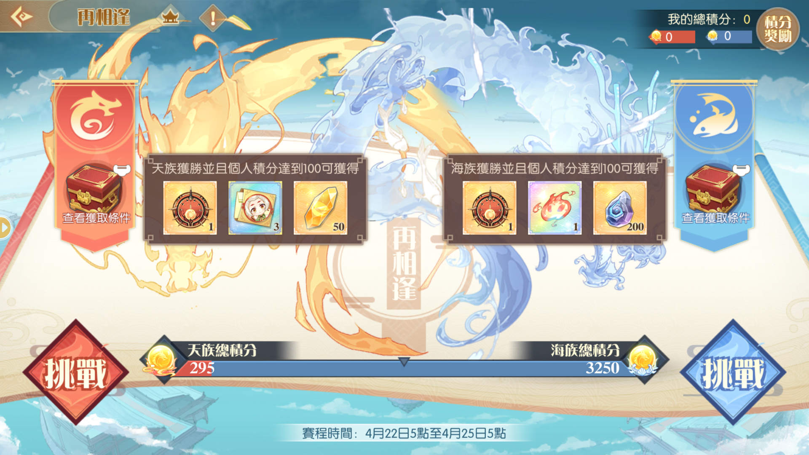
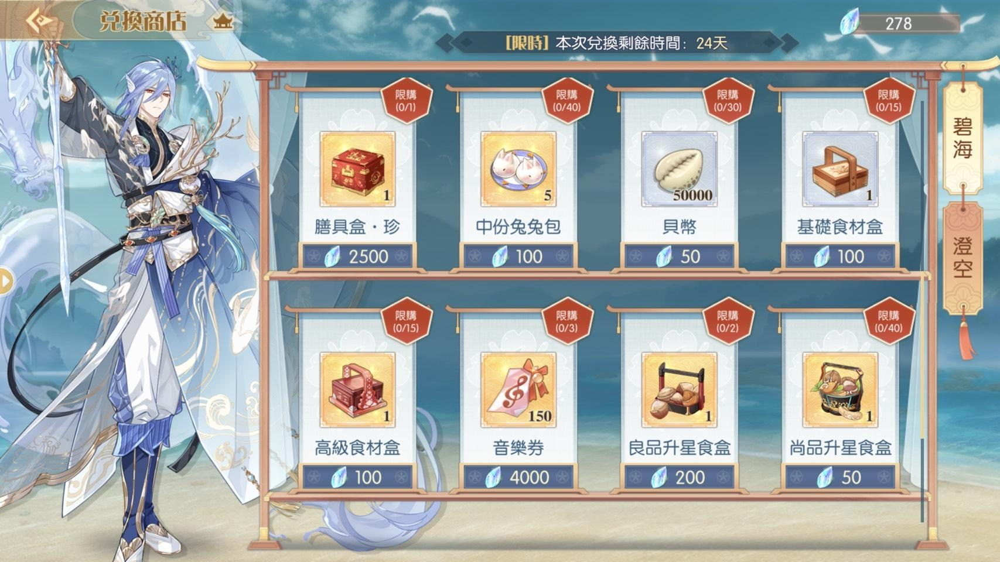
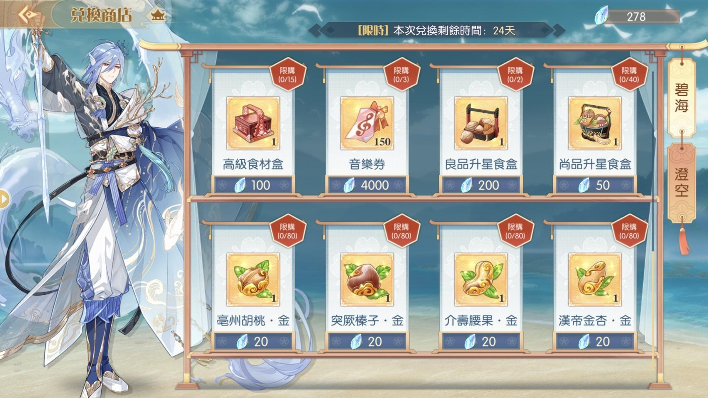
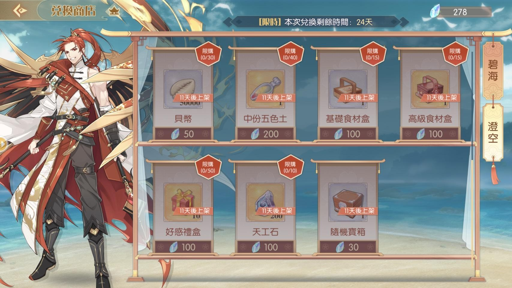
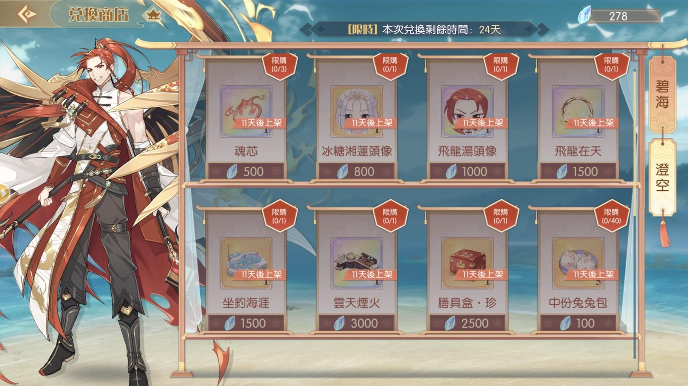
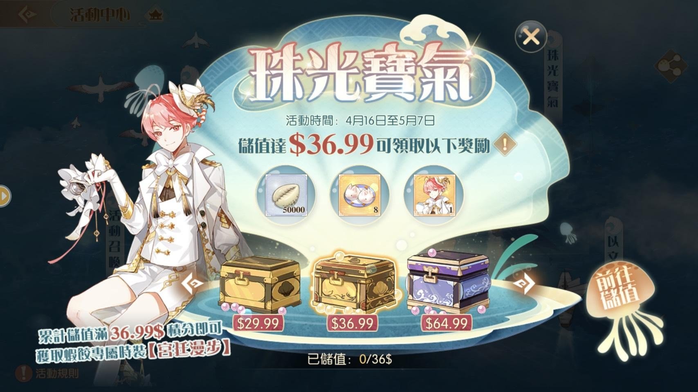
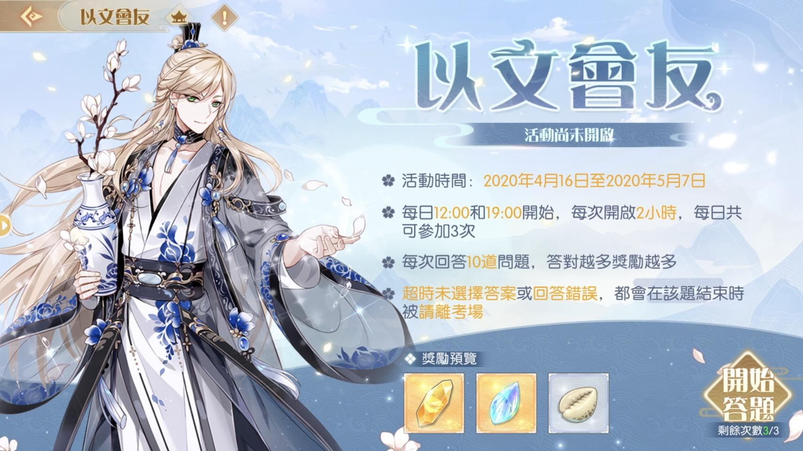
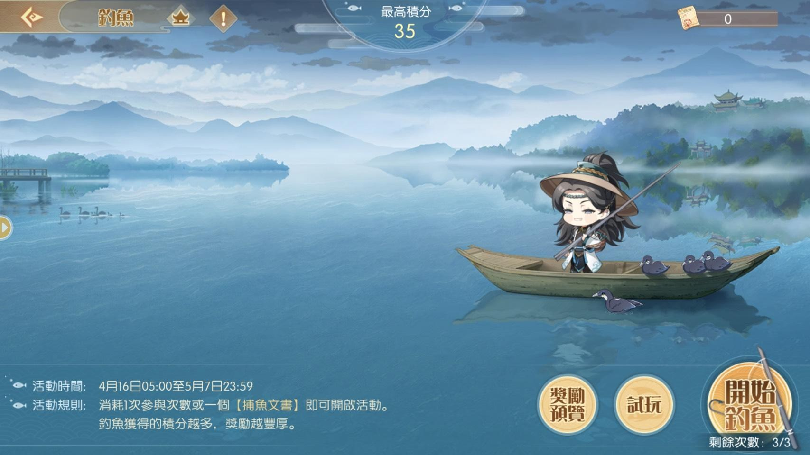

1. 卡池活動時間4/16~5/7
[限定] 風生水起、飛龍湯
蔥燒海參、冰糖湘蓮

2. 活動兌換
2. 活動兌換
糖醋浣白
時裝: 時裝商店—佛跳牆(孔雀)、蔥燒海參(碧海)
累計儲值—蝦餃(宮廷)、碧海澄空主頁背景
3. 陣營戰 [解迷津]

主要農這次商店兌換道具&emsp龍鱗&emsp的地方
活動加成食魂:
風生水起(15%)、飛龍湯(15%)、
冰糖湘蓮(10%)、糖醋沅白(10%)、揚州炒飯(8%)
—特別注意—
關卡分為4個難度，但分為天陣營跟海陣營
之後挑戰關卡除了龍鱗，也會累積該陣營積分
兩邊陣營積分的多寡會決定勝負後派發的獎勵
兩邊積分合計至少100點才能獲取陣營獲勝獎勵
100點 是 100場 12體力的戰鬥
每次陣營戰僅開放3天
3天內花費1200體力（不論兩邊各打多少）
才能獲取陣營獎勵，選擇你喜歡的獎勵陣營
總共有三次的陣營戰，每次獨立
實際各陣營的獎勵不太確定請以正式為主
ROUND1
天 (魂芯×1+禮物) vs 海 (調料碎片×2+天工石)
ROUND2
天 (珍膳具碎片×100+中份五色土×2) vs 海 (時裝券×100+大份兔兔包)
ROUND3
天 (珍膳具碎片×50+調料信物×3) vs 海 (天工石×200+魂芯×1)

4. 龍麟掉落&商城兌換
關卡4個難度的掉落分別為:
無加成 50 55 60 65
揚州加成(8%) 54 59 64 70
珍品加成(10%) 55 60 66 71
揚州加珍品(18%) 59 64 70 76
揚州加御品(23%) 61 67 73 79
御品加珍品(25%) 62 68 75 81
全加成(50%) 75 82 90 97
基本上除非你揚州炒飯加上新的食魂高練度
要不然不帶加乘角直接打最後一關(65)即可
或是你超過 23% 的加成打第二關(67)




商城一樣分作兩期(右邊有切換的按鈕)
5. 推薦兌換順序
兌換順序:
這次不一定要換 糖醋浣白
看你的練度和加成狀況而定
不帶加乘角直接打最後一關(65)即可
或是你超過 23% 的加成打第二關(67)
可供兌換的內容很多，優先兌換自己需要的
魂芯 > 膳具盒珍 > 活動家具>
天工石 > 五色土 > 兔兔包 > 貝幣
音樂券買一首要 4000 龍麟(自行斟酌)
珍品食材的兌換 略虧
只能說看你體力的分配，需要就直接換
還記得上面說的 陣營戰 3天要花1200體力
其餘活動限定內容、升星食盒、食材盒
就依各位需求自行兌換
6.儲值活動
36.99 美金 蝦餃時裝 (宮廷)
199.99 美金 碧海澄空主頁背景
7.以文會友
每天12:00~14:00和19:00~21:00限時挑戰
8.小遊戲 [漁樂無窮]
每天三次機會
積分影響拿到的體力和龍麟
9.家園限時兌換
保底兌換家具活動再次來臨
每次的天工石祈福可以獲得1積分
一定次數的祈福可以換一個御品家具
家具的舒適度是一個系列圖鑑5種加10積分
可以自行斟酌要不要拚這次的家具